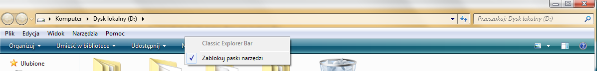

ok what i did wrong or maybe right i was only checking if extensions are enabled
i could not even find that add-ons window well now i did i stand corrected and i bow low before you guys
my problem is fixed bless you all
| Classic Shell http://www.classicshell.net/forum/ |
|
| up folder button missing + classic explorer bar grayed out http://www.classicshell.net/forum/viewtopic.php?f=8&t=6912 |
Page 1 of 1 |
| Author: | ZeroX4 [ Fri Sep 30, 2016 11:13 am ] |
| Post subject: | up folder button missing + classic explorer bar grayed out |
1st of all i did see this viewtopic.php?f=8&t=1573 and many others and it dont help ok 1st of all my UP FOLDER button disappeared i had same problem before and i was trying to figure it out but i failed so i re-installed windows 7 64 U which im using and problem was solved (which was like 1 month ago) but yesterday i encounter same issue now i know why cause for 1 of my game very rarely i need to reset internet explorer settings to default i do this https://malwaretips.com/blogs/reset-int ... -settings/ and exactly after that up button is missing and classic explorer bar option on taskbar is grayed out ok 1st problem looks like this (UP folder button missing and classic explorer bar option grayed out)  now what i did try 1. winkey+E then alt+V that do nothing for win+e opens folder but alt+v do absolutely nothing 2. third party extensions in advanced internet options < no matter of i check or un-check it but it was and is checked 3. reinstall classic shell < no difference 4. reset classic shell settings and/or load settings from xml file < no difference 5. remove from registry this key HKEY_CURRENT_USER\Software\Microsoft\Internet Explorer\Toolbar\ShellBrowser < no difference any other ideas would be cool cause i run out of even stupid ones in the end it wont hurt me to reinstall windows but it would be cool if i could fix my problem without doing so also i would like to remind that it happens to me after i reset internet explorer settings to default so i think something in that settings just is set to different value then it is after windows installation |
|
| Author: | Ivo [ Sat Oct 01, 2016 7:48 am ] |
| Post subject: | Re: up folder button missing + classic explorer bar grayed o |
Check if the addons are enabled: http://www.classicshell.net/faq/#explorer_toolbar |
|
| Author: | ZeroX4 [ Sat Oct 01, 2016 8:42 am ] |
| Post subject: | Re: up folder button missing + classic explorer bar grayed o |
did you read what i wrote? |
|
| Author: | Ivo [ Sat Oct 01, 2016 9:18 am ] |
| Post subject: | Re: up folder button missing + classic explorer bar grayed o |
I don't see where you looked at the Internet Explorer's "Manage Addons" settings to check of the Classic Explorer components are indeed enabled. |
|
| Author: | Gaurav [ Sat Oct 01, 2016 10:52 am ] |
| Post subject: | Re: up folder button missing + classic explorer bar grayed o |
There are 2 steps involved: - Check "Enable third-party browser extensions" on Advanced Tab in Internet Options - Enable the add-ons from Tools menu of IE -> Manage add-ons. Then close and reopen any Explorer windows. Both must be done again after you reset Internet Explorer settings to default. |
|
| Author: | ZeroX4 [ Sat Oct 01, 2016 12:20 pm ] |
| Post subject: | Re: up folder button missing + classic explorer bar grayed o |
ok what i did wrong or maybe right i was only checking if extensions are enabled i could not even find that add-ons window well now i did i stand corrected and i bow low before you guys my problem is fixed bless you all |
|
| Page 1 of 1 | All times are UTC - 8 hours [ DST ] |
| Powered by phpBB® Forum Software © phpBB Group https://www.phpbb.com/ |
|